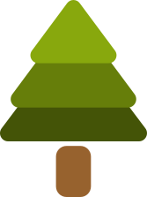
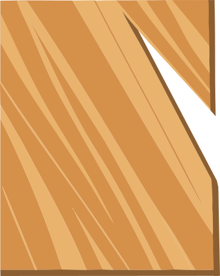
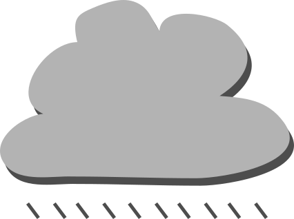
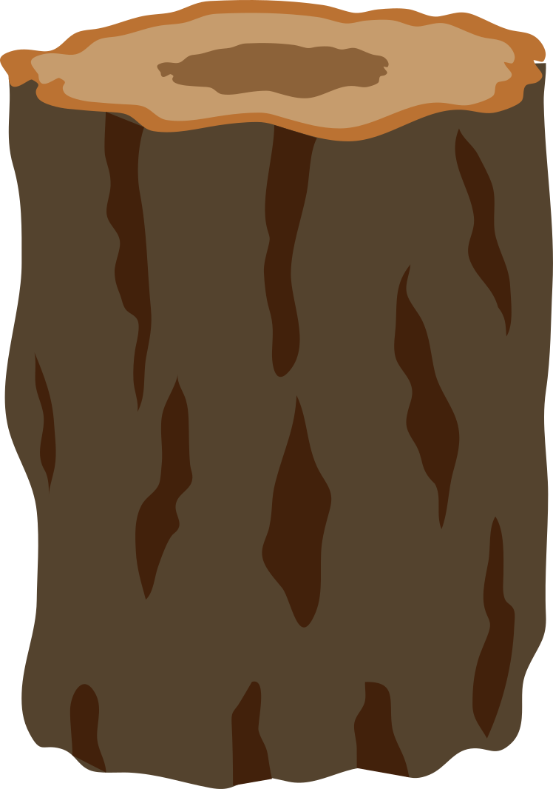
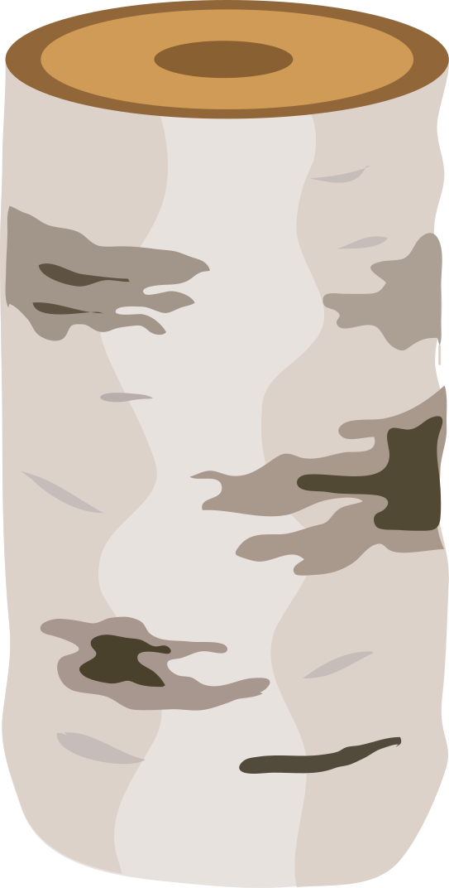

Infographic

4000
Bomen herbruikt

20
Soorten hout
15
Verschillende toepassingen

700kg
CO2 bespaart
Houtsoorten
Abeel
De abeelboom (Populus) is een snelgroeiende boom met hartvormige bladeren en lichtgewicht hout. Mannelijke en vrouwelijke bomen produceren pluisjes en katjes.
Acasia
De acaciaboom, behorend tot het geslacht Acacia, kenmerkt zich door fijne bladeren en is inheems in verschillende delen van de wereld. Het levert duurzaam hout en voedselbronnen.

Berk
De berk, van het geslacht Betula, herkenbaar aan zijn kenmerkende zilverachtige schors en driehoekige bladeren, groeit in gematigde streken en heeft hout- en bladtoepassingen.
